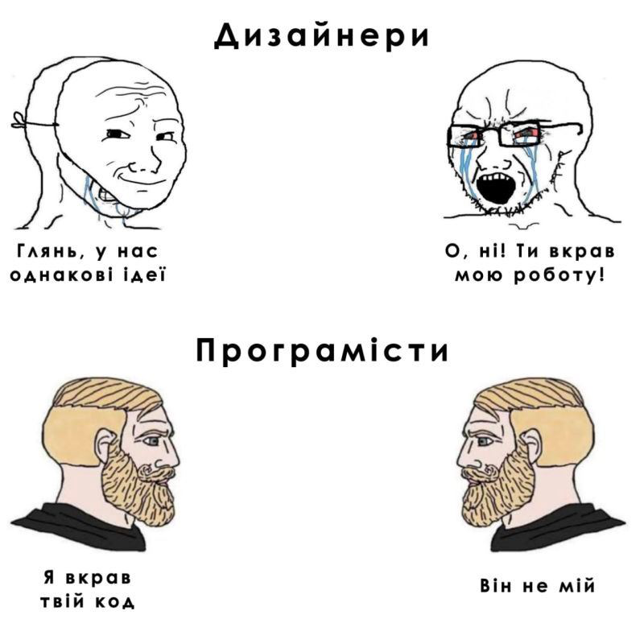
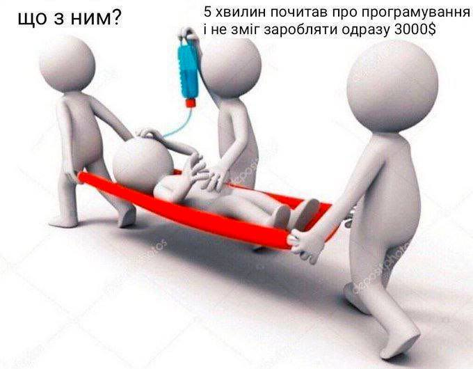

Additional tasks
Lesson #2

Task #0
Дано ширину екрана та кількість елементів, які повинні бути відображені у
рядку.
Визначити ширину елементів, які повинні
бути відображені у цьому рядку.
Task #1
З клавіатури вводиться розмір заробітної плати та
розмір
прожиткового мінімуму. Визначити розмір соціальної допомоги
(ввжаємо, що заробітна плата є меншою).
Task #2
З клавіатури вводяться вартість одиниці та
кількість
одиниць двох товарів. Вивести на екран вартість кожного з видів
товарів окремо і загальну вартість.
Task #3
З клавіатури вводиться вік дитини. Вивести на
екран через
скільки років вона буде відвідувати садочок, піде у школу,
закінчить школу, вступить і закінчить
Task #4
Визначити, яку платню одержить на фірмі сумісник
за
виконану роботу, якщо йому нараховано S грн., а податок становить
20%.
Task #5
Дано три дійсні змінні a, b і c. Скласти алгоритм,
який
міняє місцями значення цих змінних наступним чином: змінна a
набуває значення змінної b, змінна b набуває значення змінної c, а змінна c
–
попереднє значення змінної a.
Task #6
Скласти алгоритм, який обчислює цілу і дробову
частину
даного числа х. Наприклад: число 23,56 => ціла: 23, дробова:
0,56.
Task #7
Розробити програму (не використовувати if), яка за
номером
року Y визначає номер століття C (врахувати, що початком XX
століття був 1901, а не 1900 рік).
Task #8
Скласти програму для розв’язування задачі: йде N-а
секунда
доби, визначити скільки повних годин і повних хвилин пройшло
до цього моменту.
Task #9
З клавіатури вводиться кількість монет номіналом 1
копійка. Визначити скільки гривень і копійок є у даній сумі .
Наприклад, дано 245 копійок, а вивести 2 грн 45 копійок.
Task #10
Дано поточну кількість годи, хвилин, секунд (як на
годиннику). Визначити
1) яка кількість секунд буде на годиннику через N секунд.
2) яка кількість хвилин буде на годиннику через N секунд, X хвилин.
1) яка кількість секунд буде на годиннику через N секунд.
2) яка кількість хвилин буде на годиннику через N секунд, X хвилин.
Task #11
З клавіатури вводиться кількість монет номіналом 2
копійки
(5коп, 25коп, 50 коп). Визначити скільки гривень і копійок є
у даній сумі.
Task #13
З клавіатури вводиться номер дня тижня (від 1 до
7).
Визначити який буде день тижня через N днів.
Task #14
З клавіатури вводиться кількість місяців, які
пройшли від
деякого моменту часу. Вивести повну кількість років і місяців.
Наприклад, дано 28 місяців, а вивести 2 роки і 4 місяці.
Lesson #3

Task #0
На екран виводиться меню:
1. Веселий
2. Сумний
3. Обурений
Користувач вводить номер пункту меню і на екрані з’являється відповідне зображення смайла.
1. Веселий
2. Сумний
3. Обурений
Користувач вводить номер пункту меню і на екрані з’являється відповідне зображення смайла.
Task #1
Комп’ютер випадковим чином вибирає початок і кінець проміжку (проміжок
повинен знаходитися в межах від 1 до 100). Користувач вводить число і виграє,
якщо
число знаходиться у цьому проміжку, або розташоване від нього (від лівого або
правого краю) не більше ніж на 10.
Task #2
Комп’ютер загадує число від 1 до 10. Двоє користувачів надають свої відповіді.
Виграє той, у кого число знаходиться
ближче до загаданого комп’ютером числа.
Task #3
Морський бій. Ворожий корабель, може знаходитись в одному із квадратів
(кількість квадратів вводиться з клавіатури), які
розташовані лінійно (один за одним) на річці.
Task #4
Модифікувати попередню задачу з можливістю після пострілу переміщення корабля у
випадковим чином вибрану сусідню
клітинку (якщо звичайно корабель не було потоплено за першим разом).
Task #5
Полювання. Заєць знаходиться у верхньому лівому кутку поля. Поле складається з
двох рядків і двох стовпців.